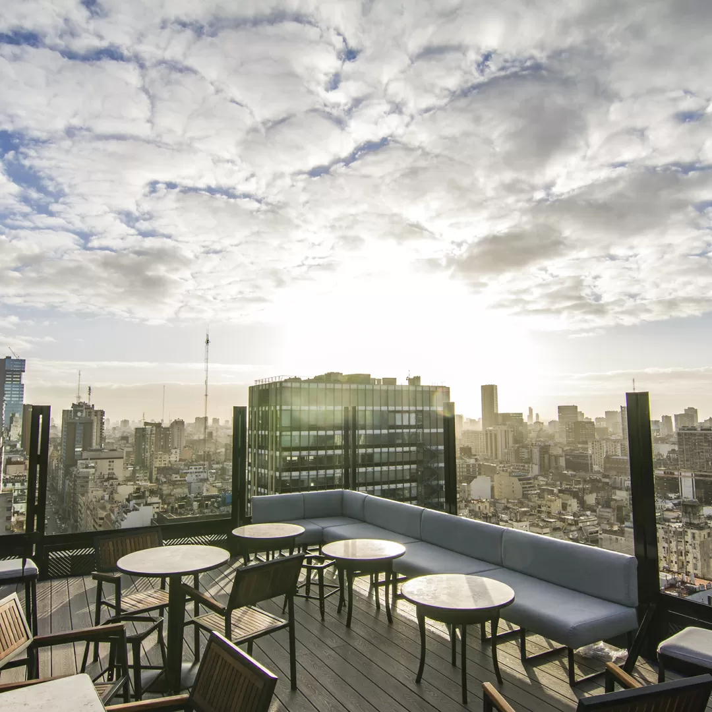
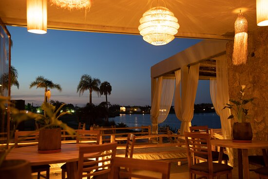

Emplazado en el edificio Comega, esa enorme construcción en Av. Corrientes 222, allí abrió a principios de 2019 Trade Sky Bar. Dividida en tres grandes sectores, el piso 19 es el restaurante y barra principal; el piso 20 reversiona la idea de un omakasé japonés, con un menú de pasos crudos elegidos por el chef; en el piso 21 está la cocina y en el 22 brilla la terraza al aire libre, con un bar más relajado que -incluso con el frío- se llena cada atardecer en un after office improvisado.
Una opcion diferente: Trade Sky Bar

Saliendo de lo cotidiano: Como Siempre Resto Bar, un oasis en Buenos Aires

Conoce el restaurante de zona norte que te lleva a una experiencia gastronómica en la laguna donde, a pocos kilómetros de Buenos Aires, el encantador oasis establece un encuentro entre los mejores sabores de las costas porteñas y la elegancia de un espacio consagrado al relax citadino. Ubicado en Deán Funes 1695, Dique Luján, a tan solo 40km de la ciudad es una buena opcion para salir un poco de lo cotidiano.